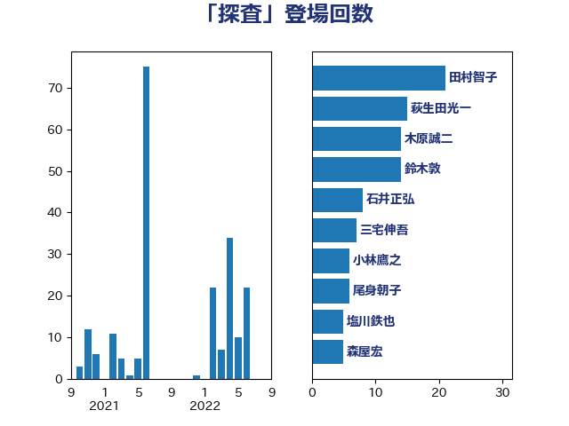

単語「探査」

| 田村智子 | 日本共産党 | 21 回 |
| 萩生田光一 | 自由民主党 | 15 回 |
| 木原誠二 | 自由民主党 | 14 回 |
| 鈴木敦 | 国民民主党 | 14 回 |
| 石井正弘 | 自由民主党 | 8 回 |
| 三宅伸吾 | 自由民主党 | 7 回 |
| 小林鷹之 | 自由民主党 | 6 回 |
| 尾身朝子 | 自由民主党 | 6 回 |
| 塩川鉄也 | 日本共産党 | 5 回 |
| 森屋宏 | 自由民主党 | 5 回 |
| 玄葉光一郎 | 立憲民主党 | 4 回 |
| 大野敬太郎 | 自由民主党 | 3 回 |
| 林芳正 | 自由民主党 | 3 回 |
| 青柳陽一郎 | 立憲民主党 | 3 回 |
| 三ッ林裕巳 | 自由民主党 | 2 回 |
| 上野通子 | 自由民主党 | 2 回 |
| 丹羽秀樹 | 自由民主党 | 2 回 |
| 井上信治 | 自由民主党 | 2 回 |
| 加藤鮎子 | 自由民主党 | 2 回 |
| 奥野総一郎 | 立憲民主党 | 2 回 |
| 末松信介 | 自由民主党 | 2 回 |
| 池田佳隆 | 自由民主党 | 2 回 |
| 浅野哲 | 国民民主党 | 2 回 |
| 磯崎仁彦 | 自由民主党 | 2 回 |
| 菅義偉 | 自由民主党 | 2 回 |
| たがや亮 | れいわ新選組 | 1 回 |
| 中川郁子 | 自由民主党 | 1 回 |
| 伊佐進一 | 公明党 | 1 回 |
| 吉川沙織 | 立憲民主党 | 1 回 |
| 山東昭子 | 自由民主党 | 1 回 |
| 岩渕友 | 日本共産党 | 1 回 |
| 松原仁 | 立憲民主党 | 1 回 |
| 梅村みずほ | 日本維新の会 | 1 回 |
| 梅村聡 | 日本維新の会 | 1 回 |
| 森山浩行 | 立憲民主党 | 1 回 |
| 横山信一 | 公明党 | 1 回 |
| 深澤陽一 | 自由民主党 | 1 回 |
| 田村まみ | 国民民主党 | 1 回 |
| 石井章 | 日本維新の会 | 1 回 |
| 笠井亮 | 日本共産党 | 1 回 |